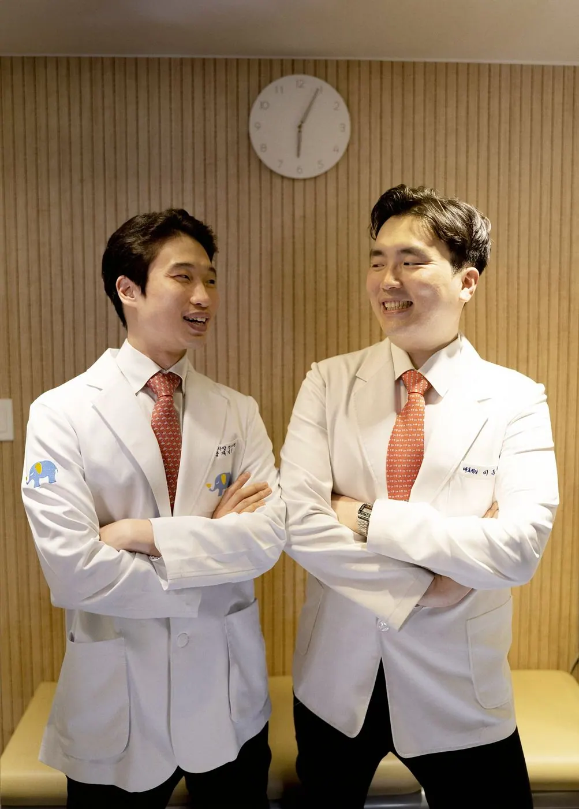

늦은 저녁 모임과 술, 짧은 잠 다음 날 아침 공복혈당이 평소보다 높게 나와 놀라는 분이 많아, 하루 수치에 놀라기보다 전날 식사·잠·측정 방법을 함께 짚고 며칠 흐름으로 살핍니다.
여쭙는 것
- 평소 공복혈당은 대략 어느 정도였고, 이번에는 얼마나 나왔나요?
- 전날 저녁은 몇 시에 시작해서 몇 시에 끝났고, 마무리로 드신 음식이 있었나요?
- 술은 어떤 종류를 얼마나 드셨나요? 단 칵테일이나 과일 소주처럼 당이 많은 술이 있…
생활에서 해 볼 것
- 모임 당일 점심은 거르지 말고 평소대로 드세요. 점심을 굶고 저녁에 몰아 먹으면 혈…
- 모임 자리에서는 채소와 두부, 생선이나 살코기 같은 단백질 반찬을 먼저 먹고, 밥이…
- 술 한 잔에 물 한 잔을 곁들이고, 단 술과 탄산 섞은 술은 피해 보세요. 마지막…
한의원에서 함께 살필 것
- 경계 수준의 공복혈당을 들은 뒤 연말 모임이 이어지며 생활 관리가 흐트러진 경우
- 늦은 식사와 술 다음 날 입이 마르고 갈증, 피로, 더부룩함이 길게 가는 경우
- 모임 뒤 잠이 얕아지고 아침마다 몸이 무거운 경우
먼저 확인이 필요한 신호
- 혈당이 250 mg/dL 이상으로 계속 나오면서 심한 갈증, 잦은 소변이 있는 경우
- 구토, 복통, 숨이 가쁘거나 입에서 과일 냄새 같은 냄새가 나는 경우
- 식은땀, 손 떨림, 두근거림, 멍한 느낌과 함께 혈당이 70 mg/dL 아래로 나오…
연말 모임 다음 날 아침 혈당계를 찍어 보니 평소보다 공복혈당이 훌쩍 높게 나와 걱정되는 분이 많습니다. 늦은 시간의 푸짐한 식사와 기름진 안주, 짧고 얕은 잠, 긴장과 피로가 겹치면 다음 날 아침 수치가 일시적으로 높게 나올 수 있어, 하루의 숫자 하나로 판단하기보다 며칠 동안 같은 조건에서 잰 흐름을 보는 것이 먼저입니다. 반대로 당뇨약이나 인슐린을 쓰시는 분은 술 마신 다음 날 오히려 혈당이 떨어질 수 있어 높은 수치만큼 낮은 수치도 조심하셔야 합니다. 다만 수치가 250 mg/dL 이상으로 계속 나오면서 심한 갈증, 잦은 소변, 구토, 숨이 가쁜 느낌이 함께 있다면 생활 조정보다 바로 병원 진료가 필요합니다.
왜 모임 다음 날 공복혈당이 높게 나올 수 있나요
- 저녁을 늦게, 많이 드시면 잠든 뒤에도 음식이 계속 흡수되고 있어 아침 공복 시점의 혈당에 영향을 줄 수 있습니다. 특히 기름진 음식은 흡수를 늦춰 혈당이 오르는 시간이 밤사이로 밀리기 쉽습니다.
- 모임 마무리로 먹는 국수, 볶음밥, 떡, 케이크처럼 탄수화물과 단것이 많은 음식은 늦은 밤 혈당을 높이는 쪽으로 작용합니다.
- 잠이 짧거나 자주 깨면 몸이 스트레스 상태로 받아들여 혈당을 올리는 호르몬이 늘 수 있습니다.
- 새벽녘에는 원래 몸을 깨우는 호르몬이 늘면서 혈당이 조금 오르는 흐름이 있는데, 전날의 피로와 짧은 잠이 겹치면 이 오름이 더 크게 보일 수 있습니다.
- 술은 마신 당일 밤에는 간이 당을 내보내는 일을 막아 혈당을 낮추는 쪽으로 작용하기도 하고, 함께 먹은 안주와 단 술은 혈당을 올리는 쪽으로 작용해 다음 날 수치가 사람마다 다르게 나옵니다.
- 귤이나 떡을 만진 손가락으로 바로 재면 손에 남은 당 때문에 수치가 높게 나올 수 있습니다. 측정 방법이 흔들렸는지도 함께 봅니다.
- 한의학에서는 연말처럼 늦은 식사와 술, 수면 부족이 이어지는 시기를 위에 열이 쌓이고 몸의 진액이 마르는 흐름으로 보고, 입마름, 갈증, 피로, 소변의 변화를 함께 살핍니다.

먼저 이렇게 여쭙니다
- 평소 공복혈당은 대략 어느 정도였고, 이번에는 얼마나 나왔나요?
- 전날 저녁은 몇 시에 시작해서 몇 시에 끝났고, 마무리로 드신 음식이 있었나요?
- 술은 어떤 종류를 얼마나 드셨나요? 단 칵테일이나 과일 소주처럼 당이 많은 술이 있었나요?
- 잠든 시각과 일어난 시각, 중간에 깬 횟수는 어땠나요?
- 측정 전에 손을 씻으셨나요? 측정은 일어나서 몇 분 뒤, 무엇을 마시기 전에 하셨나요?
- 당뇨나 공복혈당장애로 진단받은 적이 있나요? 복용 중인 약이나 인슐린이 있다면 이름과 시각을 알려 주세요.
- 최근 당화혈색소 검사를 받으셨다면 언제, 얼마로 나왔나요?
- 평소보다 갈증이 심하거나 소변이 잦거나, 체중이 줄었나요?
- 손이 떨리거나 식은땀이 나고 가슴이 두근거렸던 순간이 있었나요?
- 지난번 상담에서 정한 저녁 마감 시각이나 걷기 습관이 있었다면 연말에 어떻게 되었는지부터 이어서 여쭙니다.
일상에서 먼저 해 볼 수 있는 것
아래 순서는 저녁 7시에 시작하는 모임이 있는 날과 그다음 사흘을 기준으로 적었습니다.
- 모임 당일 점심은 거르지 말고 평소대로 드세요. 점심을 굶고 저녁에 몰아 먹으면 혈당이 더 크게 출렁이기 쉽습니다.
- 모임 자리에서는 채소와 두부, 생선이나 살코기 같은 단백질 반찬을 먼저 먹고, 밥이나 면, 떡은 마지막에 조금만 드세요.
- 술 한 잔에 물 한 잔을 곁들이고, 단 술과 탄산 섞은 술은 피해 보세요. 마지막 잔은 밤 9시 30분 전으로 정해 두면 도움이 됩니다.
- 마무리 국수나 볶음밥, 디저트는 정중히 사양하거나 두세 숟가락만 맛보세요.
- 귀가 뒤 바로 눕지 말고 15분 정도 집 안이나 집 앞을 천천히 걸으세요. 상도동처럼 언덕이 많은 동네에서 밤늦게 걸을 때는 미끄러운 내리막을 피하고 평지를 고릅니다. 술을 많이 드셨다면 걷기보다 안전하게 쉬는 것이 먼저입니다.
- 다음 날 아침에는 일어나 화장실을 다녀온 뒤 손을 비누로 씻고 물기를 완전히 닦은 다음, 아무것도 먹거나 마시기 전에 재세요. 매번 같은 순서로 재야 비교가 됩니다.
- 수치가 평소보다 높게 나왔다면 그 하루로 결론 내리지 말고, 모임이 없는 날 사흘 동안 같은 방법으로 다시 재서 적어 보세요.
- 다음 날 아침 식사는 거르지 말고 단백질과 채소가 들어간 평소 식사로 하고, 점심 뒤 15~20분 걷기를 더해 보세요.
- 그 주에는 다른 날 저녁을 평소보다 이르게, 가볍게 드시고 잠자리에 드는 시각을 30분 앞당겨 보세요.
- 당뇨약이나 인슐린을 쓰시는 분은 술 드신 날 밤과 다음 날 아침 저혈당에 대비해 사탕이나 주스를 가까이 두시고, 약 용량을 스스로 바꾸지 말고 담당 의사와 미리 상의해 두세요.

예를 들면 이런 경우입니다
아래는 실제 환자 이야기가 아니라 이해를 돕기 위해 만든 예시입니다.
- 예를 들어 평소 공복혈당이 90대 초반이던 분이 밤 11시까지 이어진 송년회에서 고기와 볶음밥, 케이크까지 드시고 새벽 1시에 잠든 다음 날 아침 110대가 나온 경우, 늦은 식사와 짧은 잠이 겹친 영향일 수 있습니다. 모임 없는 날 사흘 동안 같은 방법으로 다시 재어 평소 수치로 돌아오는지 보는 것이 먼저입니다.
- 예를 들어 집에서 귤을 까 먹은 뒤 손을 씻지 않고 바로 손가락을 찔러 잰 경우, 실제보다 높게 나올 수 있습니다. 손을 씻고 다시 재어 수치가 달라지는지 확인해 보세요.
- 예를 들어 공복혈당장애로 진단받은 분이 12월 한 달 동안 주 두세 번 모임을 이어 가며 모임 없는 날에도 아침 수치가 조금씩 높아지는 경우, 하루의 일이 아니라 생활 흐름이 바뀐 것일 수 있어 당화혈색소 확인과 함께 저녁 마감 시각부터 다시 정해 보는 편이 좋습니다.
- 예를 들어 당뇨약을 드시는 분이 술자리 다음 날 아침 식은땀과 손 떨림으로 깼는데 수치가 70 mg/dL 아래로 나온 경우는 저혈당일 수 있습니다. 바로 단 음료나 사탕을 드시고 15분 뒤 다시 재며, 이런 일이 있었다면 담당 의사와 약 조정을 상의하셔야 합니다.
자주 하는 오해
- 하루 아침 수치가 높게 나왔다고 바로 당뇨라고 걱정하시는 분이 많습니다. 진단은 정해진 검사를 기준에 맞춰 반복해서 확인한 결과로 하며, 가정용 혈당계 한 번의 수치로 판단하지 않습니다.
- 반대로 다음 날 수치가 정상이면 모임 식사가 혈당에 아무 영향이 없었다고 여기기 쉽습니다. 식후 혈당은 공복혈당과 다르게 움직이므로 식사 뒤 수치나 당화혈색소도 함께 보는 편이 좋습니다.
- 높게 나온 날 아침을 굶으면 수치가 내려갈 것이라 생각하는 분도 있지만, 끼니를 거르면 점심과 저녁에 오히려 크게 출렁이기 쉽습니다.
- 술은 혈당을 올리기만 한다고 생각하기 쉽지만, 약을 쓰는 분에게는 저혈당을 부를 수 있어 오히려 더 조심하셔야 합니다.

스스로 점검해 보세요
- 모임 날 저녁 식사가 밤 9시 이후까지 이어졌다.
- 마무리로 면, 밥, 떡, 디저트를 드셨다.
- 그날 잠이 평소보다 1시간 이상 짧았다.
- 측정 전에 손을 씻지 않았거나, 매번 재는 시각과 순서가 다르다.
- 12월 들어 모임이 한 주에 두 번 넘게 이어진다.
- 모임이 없는 날에도 아침 수치가 조금씩 높아지고 있다.
- 갈증이 심하고 소변이 잦으며 체중이 줄었다.
- 수치가 250 mg/dL 이상으로 계속 나오거나 구토와 숨가쁨이 함께 있다.
- 식은땀, 손 떨림, 두근거림과 함께 수치가 70 mg/dL 아래로 나온 적이 있다.
앞의 여섯 가지는 생활 흐름과 측정 방법을 점검하며 지켜볼 만한 내용이고, 뒤의 세 가지 중 하나라도 해당한다면 바로 내과 진료를 받으세요.
한의원에서 함께 살필 수 있는 경우
- 경계 수준의 공복혈당을 들은 뒤 연말 모임이 이어지며 생활 관리가 흐트러진 경우
- 늦은 식사와 술 다음 날 입이 마르고 갈증, 피로, 더부룩함이 길게 가는 경우
- 모임 뒤 잠이 얕아지고 아침마다 몸이 무거운 경우
- 체중과 복부 둘레가 늘어 생활 습관을 다시 세우고 싶은 경우
- 병원 치료를 받으면서 식사와 잠, 소화를 함께 살피고 싶은 경우
좋은꿈참사랑한의원에서는 첫 방문 때 최근 혈당 기록과 측정 방법, 모임의 횟수와 식사 시각, 술, 잠과 대변, 복용 중인 약을 차례로 여쭙니다. 원내에 당화혈색소 검사기와 혈액 검사기(마인드레이·PT10), 인바디 770이 있어 필요하면 최근 두세 달의 혈당 흐름과 몸의 구성을 함께 확인합니다. 그 뒤 모든 분께 진맥을 하며 맥의 힘과 빠르기, 몸 전체의 리듬이 어느 쪽으로 기울었는지를 살피고, 혀와 배의 상태도 함께 봅니다. 이를 바탕으로 생활 조정과 침, 한약 상담 여부를 정하며, 내과 치료를 받고 계신다면 그 치료는 그대로 이어 가시도록 안내합니다. 다음 방문에서는 지난번 정한 저녁 마감 시각과 혈당 기록이 어떻게 되었는지부터 이어서 여쭙니다. 이종호 대표원장을 비롯해 조영기 원장, 정원영 원장이 같은 방식으로 진료하며, 검사 항목과 비용은 방문 전 전화로 확인해 주세요.

얼마나 지켜보고, 언제 상담하면 좋을까요
- 모임 다음 날 한 번 높게 나왔다면 모임 없는 날 사흘 정도 같은 방법으로 다시 재어 보세요. 평소 수치로 돌아온다면 연말 동안 저녁 마감 시각을 지키며 지켜볼 수 있습니다.
- 모임 없는 날에도 공복혈당이 100 mg/dL 이상으로 계속 나온다면 내과에서 공복혈당과 당화혈색소를 확인받으시길 권합니다.
- 126 mg/dL 이상이 여러 번 나온다면 기다리지 말고 진료를 받아 정확한 검사를 하세요.
- 250 mg/dL 이상이 이어지며 갈증, 구토, 숨가쁨이 있거나, 70 mg/dL 아래로 떨어지는 일이 반복된다면 바로 병원으로 가세요.
이렇게 기록해 오시면 상담이 쉬워집니다
- 일주일 동안 아침 공복혈당과 잰 시각, 손을 씻었는지 표시
- 모임이 있던 날은 시작과 끝 시각, 마무리 음식, 술의 종류와 양
- 잠든 시각과 일어난 시각, 중간에 깬 횟수
- 식후에도 재셨다면 식사 시작 후 몇 시간째였는지와 수치
- 최근 당화혈색소와 건강검진 결과지
- 복용 중인 약과 인슐린의 이름, 시각, 최근 바뀐 내용
- 갈증, 잦은 소변, 손 떨림 같은 증상이 있었던 날

이런 증상은 먼저 확인이 필요합니다
- 혈당이 250 mg/dL 이상으로 계속 나오면서 심한 갈증, 잦은 소변이 있는 경우
- 구토, 복통, 숨이 가쁘거나 입에서 과일 냄새 같은 냄새가 나는 경우
- 식은땀, 손 떨림, 두근거림, 멍한 느낌과 함께 혈당이 70 mg/dL 아래로 나오는 경우
- 이유 없이 체중이 줄고 기운이 크게 떨어진 경우
- 시야가 갑자기 흐려지거나 한쪽 팔다리에 힘이 빠지는 경우
복용 중인 약과 인슐린은 처방한 의사와 상의 없이 줄이거나 끊지 않습니다. 의식이 흐려지거나 저혈당으로 스스로 무엇을 먹기 어려운 상태라면 119에 바로 연락하세요.
함께 읽으면 좋은 글
- 공복혈당이 경계 수준이라고 들었을 때 생활에서 무엇을 살펴보나요?
- 공복혈당은 정상인데 식후 혈당이 걱정될 때는 어떻게 살피나요?
- 연말에 귤과 떡, 과자를 자꾸 집어 먹게 될 때 혈당이 걱정되면 어떻게 살피나요?
한눈에 보는 표
| 구분 | 핵심 |
|---|---|
| 여쭙는 것 | 평소 공복혈당은 대략 어느 정도였고, 이번에는 얼마나 나왔나요? 전날 저녁은 몇 시에 시작해서 몇 시에 끝났고, 마무리로 드신 음식이 있었나요? |
| 생활에서 해 볼 것 | 모임 당일 점심은 거르지 말고 평소대로 드세요. 점심을 굶고 저녁에 몰아 먹으면 혈당이 더 크게 출렁이기 쉽습니다. 모임 자리에서는 채소와 두부, 생선이나 살코기 같은 단백질 반찬을 먼저 먹고, 밥이나 면, 떡은 마지막에 조금만 드세요. |
| 한의원에서 함께 살필 것 | 경계 수준의 공복혈당을 들은 뒤 연말 모임이 이어지며 생활 관리가 흐트러진 경우 늦은 식사와 술 다음 날 입이 마르고 갈증, 피로, 더부룩함이 길게 가는 경우 |
| 먼저 확인이 필요한 신호 | 혈당이 250 mg/dL 이상으로 계속 나오면서 심한 갈증, 잦은 소변이 있는 경우 구토, 복통, 숨이 가쁘거나 입에서 과일 냄새 같은 냄새가 나는 경우 |
자주 묻는 질문
모임 다음 날 한 번 높게 나왔는데 바로 병원에 가야 하나요?
다른 증상이 없다면 모임 없는 날 사흘 정도 같은 방법으로 다시 재어 흐름을 보세요. 계속 높게 나오거나 갈증, 잦은 소변이 함께 있다면 진료를 받으시길 권합니다.
혈당계 수치는 병원 검사와 같나요?
가정용 혈당계는 흐름을 보는 데 도움이 되지만 병원 검사와 조금 차이가 날 수 있습니다. 진단은 병원의 정해진 검사로 합니다.
술 마신 날 당뇨약을 건너뛰어도 되나요?
스스로 판단해 건너뛰거나 용량을 바꾸지 마세요. 술자리가 예정되어 있다면 담당 의사와 미리 상의해 두시는 것이 안전합니다.
한의원에서 당화혈색소를 잴 수 있나요?
원내에 당화혈색소 검사기가 있어 필요할 때 확인할 수 있습니다. 검사 가능 여부와 비용은 방문 전 02-815-7510으로 확인해 주세요.
진료 시간은 어떻게 되나요?
평일은 오전 9시 30분부터 오후 8시까지(점심 13:00~14:00), 토·일·공휴일은 오전 9시 30분부터 오후 3시까지 점심시간 없이 진료합니다.
이 글은 일반적인 건강 정보이며 개인의 진단이나 치료를 대신하지 않습니다. 증상이 있거나 복용 중인 약이 있다면 진료를 통해 확인하세요. 치료 효과는 개인마다 다를 수 있습니다.
작성 기준: 일반적으로 알려져 있는 건강 정보를 참고해 정리했습니다(대표원장 감수). 증상 기록은 1~2주 동안 하루 1회, 비슷한 시간에 적어 오시면 지난 상태와 비교하기 쉽습니다.
좋은꿈참사랑한의원은 재진 때 지난번 이야기부터 이어서 여쭙니다. 진료시간과 예약은 오시는 길에서 확인하세요.